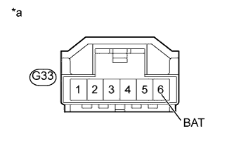
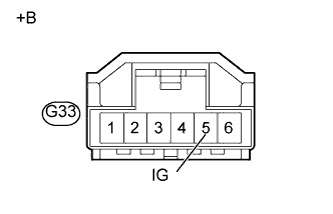

DTC C1434 Недопустимый выходной сигнал датчика угла поворота рулевого колеса |
| Код DTC | Условие обнаружения DTC | Неисправный участок |
| C1434 | Ошибка при передаче данных между ЭБУ системы противоскольжения и датчиком угла поворота рулевого колеса, либо неверный "нуль" датчика угла поворота рулевого колеса. |
|
| 1.ПРОВЕРЬТЕ DTC |
Сбросьте коды DTC (Нажмите здесь).
Выключите зажигание.
Снова включите зажигание и убедитесь, что коды DTC для мультиплексной шины CAN не выводятся (Нажмите здесь).
Запустите двигатель.
Разгоните автомобиль до скорости 35 км/час (22 мили в час) и, поворачивая рулевое колесо вправо и влево, убедитесь в отсутствии кодов DTC датчиков частоты вращения и датчика замедления и рысканья (Нажмите здесь).
| Результат | Следующий шаг | |
| DTC, относящиеся к мультиплексной шине CAN, датчикам частоты вращения и датчику замедления и рысканья, не выводятся | А | |
| Выводится DTC, относящийся к системе передачи данных CAN | для моделей с левосторонним рулевым управлением без системы посадки и запуска | B |
| Выводится DTC, относящийся к системе передачи данных CAN | для моделей с правосторонним рулевым управлением без системы посадки и запуска | C |
| Выводится DTC датчика частоты вращения или датчика замедления и рысканья | D | |
|
| ||||
|
| ||||
|
| ||||
| А | |
| 2.ПРОВЕРЬТЕ НАПРЯЖЕНИЕ НА КОНТАКТЕ (BAT) |
Убедитесь, что фиксирующая и соединительная части разъемов не ослаблены.
Отсоедините разъем G33 датчика угла поворота рулевого колеса.
|  |
Измерьте напряжение в соответствии со значениями, приведенными в таблице.
| Контакты для подключения диагностического прибора | Условие | Заданные условия |
| G33-6 (BAT) - масса | Всегда | 11 - 14 В |
| *a | Вид спереди разъема со стороны жгута проводов: (к датчику угла поворота рулевого колеса) |
|
| ||||
| OK | |
| 3.ПРОВЕРЬТЕ НАПРЯЖЕНИЕ НА КОНТАКТЕ (IG) |
Отсоедините разъем G33 датчика угла поворота рулевого колеса.
|  |
Измерьте напряжение в соответствии со значениями, приведенными в таблице.
| Контакты для подключения диагностического прибора | Положение переключателя | Заданные условия |
| G33-5 (IG) - масса | Зажигание включено | 11-14 В |
| *a | Вид спереди разъема со стороны жгута проводов: (к датчику угла поворота рулевого колеса) |
|
| ||||
| OK | |
| 4.ПРОВЕРЬТЕ ЖГУТ ПРОВОДОВ И РАЗЪЕМ (ЦЕПЬ ESS) |
Отсоедините разъем G33 датчика угла поворота рулевого колеса.
Измерьте сопротивление в соответствии со значениями, приведенными в таблице ниже.
| Контакты для подключения диагностического прибора | Условие | Заданные условия |
| G33-2 (ESS) - масса | Всегда | Менее 1 Ом |
|
| ||||
| OK | ||
| ||